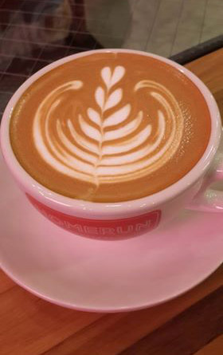
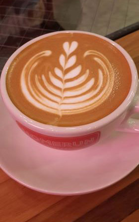

- 咖啡
- 朋友的午餐
美食最佳飲品 -- Coffee 您的朋友 !

 

進入精品咖啡世界後，味蕾最先感受到的往往是：酸！酸度：是精品咖啡品嘗中最重要的一個項目，通常也最容易被誤解的一個詞彙。精品咖啡的酸度不是酸鹼度中的酸性，也不是進入胃裡讓人不舒服的酸。在沖泡精品咖啡時，酸度的表現是很重要的，在標準沖泡的條件及技巧下，可發展出酸度清爽的特殊口味，是精品咖啡必備的條件。 檸檬酸-檸檬酸常見於檸檬、柑橘一類的水果，口感明亮度高，body感受略降，不影響香氣，這種口感可常見於非洲豆，尤其是衣索比亞的水洗豆，部份中美洲也能感受到。 磷酸-咖啡酸質中唯一需要來自土壤，植物無法自行合成的無機酸。磷酸的酸感跟蘋果酸一開始很像，仔細感受一下就會發現，磷酸帶給口中的滋味更柔順舒服，body感受會略降 其實所有的精品咖啡都有酸味，不過這些酸在高溫時又會焦掉，使得越深烘焙的豆子越不酸。 酸味帶給咖啡更豐富的內涵，有些略為酸的香味，還可以提神醒腦